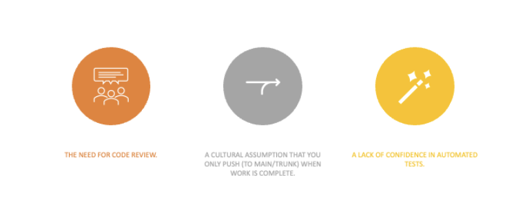
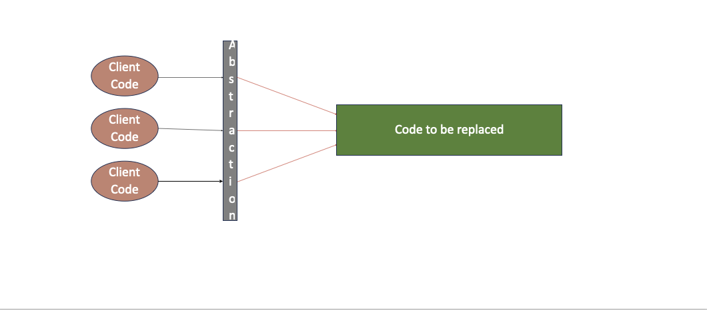
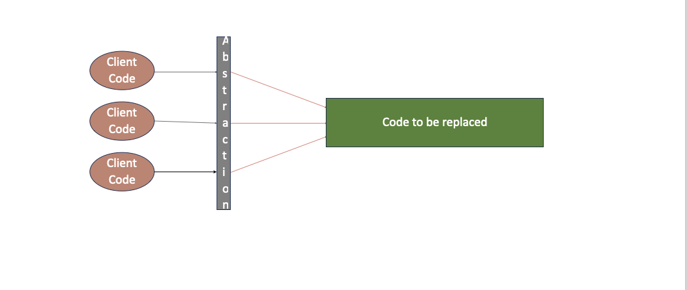
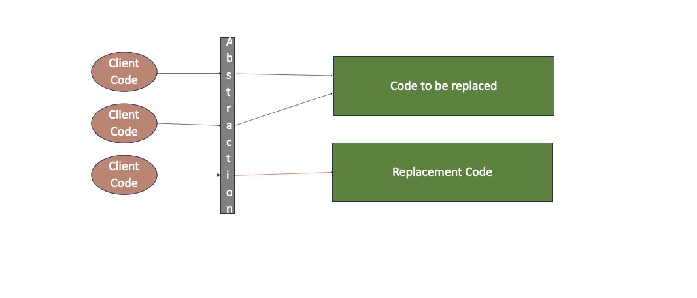
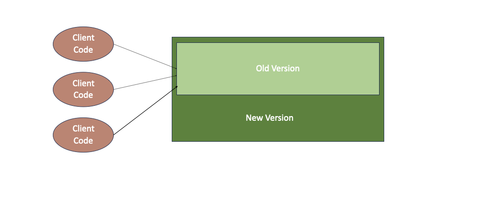
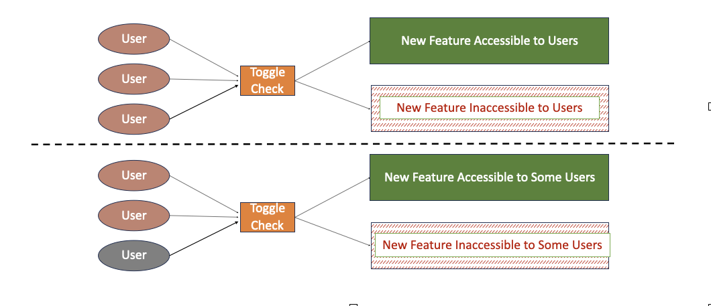

Continuous Integration
The term originated in Kent Beck’s Extreme Programming development process as one of its original 12 practices, back in 2000. So, it’s been around for a while.
Martin Fowler defines it as: a software development practice where members of a team integrate their work frequently, usually each person integrates at least daily - leading to multiple integrations per day. Each integration is verified by an automated build (including test) to detect integration errors as quickly as possible[1]
Regardless of which technique you use to achieve Continuous Integration, it is good to remember why you want it in the first place.You are following this practise because you want:
- Earlier visibility to code changes so that you can find integration issues sooner
- You want cleaner code by working on a codebase that is as ‘close to current’ as possible - pulling out duplication etc
Continuous integration means smaller commits, meaning smaller reviews – so hopefully shorter review cycles. Combined, these all help achieve faster release cycles. Faster access to feedback on your product.
So what strategies are typically used to achieve CI?
Feature Branching
Everyone is quite familiar with this approach. It’s very popular. Some of you may know it as GitFlow even though I am sure I used it before Git’s existence.
It is a branching strategy that was popularised by open-source development, where codebases are maintained by a disparate group of people - with an unknown skill-set - and where there is no formal commitment on - when - or even - if - a feature will be finished.
Furthermore, it stops features being added that have no place in the product’s roadmap.
Basically, it is a defensive barrier put in place to protect the product and the code.
This diagram is a somewhat simple example – in the real world we would have many features rather than just 2, but the idea is the same.
What is main: A single, shared, branch that acts as the current state of the product.
A branch is created to develop Feature A. Developers work on this branch until Feature A is complete. Then the branch is merged back into main. To reduce the complexity of the merge of the branch back into main, developers typically pull changes from main into the branch regularly during the lifetime of the branch.
A similar process happens for the development of Feature B. However, as Feature A has completed in the lifetime of the Feature B branch, all the code changes from the development of Feature A will have to be merged in one action with those of Feature B, either at the point its merged into main as shown here by the yellow dot or earlier in the lifetime of Feature B, such as the last purple dot in the diagram. Either way, the fact remains, that all the code changes from A need to be merged at once with those of B and this is usually a merge pain point.
The merge is done by developers working on feature B, that may never have seen the code from Feature A before – increasing the risk.
Rule of thumb:
What I like about this diagram is that you can see the air gap between features being developed – integration is the final step of the features development – that is part of the strategy – branches give the illusion of isolation – you are the only one working on the product.
This is usually cited as both the biggest advantage and the biggest disadvantage of this strategy. The benefit of isolation is traded off against late integration and merge pain. This gets to the heart of a team’s culture and how its people want to work.
In his discussion of branching patterns, Martin Fowler recalls an old joke that says that if you fall off a tall building, the falling isn't going to hurt you, but the landing will. So, it is with source code: branching is easy, merging is harder.[1]
When we think about why we are using this strategy – to get the advantages of Continuous Integration – early detection of integration bugs, better code quality, faster review and release cycles, shared ownership, and collaboration – the feature branches would have to be short-lived. This is not typically the case.
If feature branches are long-lived, then even if there is an automated build and test process, Continuous Integration is not achieved.
When you look at how Feature Branching works and the definition of Continuous Integration – it gives you a deferred integration, in a rather painful way and its certainly not continuous due to the delay of the review process. It is not really a continuous integration strategy.
Trunk Based Development
As code is frequently pushed to main, merges happen all the time, they are just smaller.
If a merge conflict happens, it must be resolved and the tests re-run before the code is pushed onto main.
Also, due to the frequency of pushes to main, the build process around it must be fast. By build process I mean that the code is pulled from main, compiled and the full test suite is run by our build server every time we push.
This is most of your CD pipeline (just not the deploy bit) which is why Continuous Integration is often talked about in conjunction with Continuous Delivery.
This strategy gives you all the advantages of Continuous Integration: early detection of integration bugs, better code quality, faster review and release cycles, shared ownership and collaboration, and it also sets you up for Continuous Delivery.
So why isn’t everyone doing Trunk Based Development?
Common Friction Points
I often find that to be agile, we must be very disciplined and apply rigour to our practises.
How successful we will be at those practises often depends on our team culture. Trunk Based Development is no exception.
Jez Humble, co-author of Continuous Delivery (2011 with Dave Farley)[2] wrote that trunk-based development is about putting the needs of the team above the needs of the individual. It is about forfeiting the illusion of isolation and adopting communication and working in small batches of code, in order to achieve the benefits of CI. Farley himself described trunk-based development as the practice which he gets the most push back on.
Some common concerns about adopting Trunk Based Development are:
- Code Reviews
A lot of industries require code to be reviewed before it can be released. We practice Pair Programming and mobbing so by default, all our code is reviewed. Most compliance processes accept Pair Programming commits as proof of review, so there is no need for a branch to satisfy that requirement.
Code Reviews can also be done on short-lived branches (<1 day), having the benefit of a shorter review and so, perhaps a better quality one.
An in person/call for a code review is much better than leaving comments in my opinion, as it is a learning/teaching opportunity, a time for discussion and collaboration, to understand why something is wrong rather than just what to do about it.
- Can only commit code if the feature is done
There are many strategies that allow you to release code around a feature without the entire feature being implemented.
We will look at a few of these in a moment.
XP Practices such as MVP analysis and Incremental design can also help with this area.
- A lack of confidence in automated tests
This assumes that you can’t test something unless its complete. Again, XP practices come into play here, TDD allows you to cover code as you write it. Even just writing tests to cover your code before committing the code is enough to give confidence here, it does not need to be test driven dev.
Separate Concerns
What if we just wanted a strategy for continuous integration with the ability to have code reviewed so we could release our application to production in the bank without pairing on everything?
What if we decided that our Continuous Integration strategy should not care if it’s a feature or a bit of a feature, that’s a separate concern.
What if we did not have a 1-2-1 relationship between a feature and a branch?
This is down to the way we work.
Now our branching strategy can be closer to a true Continuous Integration solution where the branch can be short-lived if:
- the commits are kept to a minimum (ideally 1) before being pushed to main
- the review is turned around quickly
The trade-off for not pairing on everything is the review delay. Again, down to team culture and what they decide works best for them.
So how do you not have a 1-2-1 relationship between a feature and a branch?
Breaking this relationship is key to achieving true continuous integration.
Let’s explore some techniques.
Strategies for Feature Development
How do we go about developing features on main - when main can be released at any time? There are many approaches – some you are already aware of and probably use all the time: MVP, incremental design, feature toggles.
Others you may not have heard of, - or you actually use, but not for this purpose - such as, dark launches, branch by abstraction and expand and contract
Branch by Abstraction
What is Branch by Abstraction?
Branch by Abstraction is a method that allows you to make substantial changes to your code incrementally, without resorting to long-lived feature branches. This technique was coined by Stacy Curl in 2007[3] and has since gained popularity among developers seeking a more flexible approach to code refactoring.
The Benefits
- Encourages gradual change
- Allows for continuous integration
- Reduces the risk associated with big bang replacements
- Enables easier rollback if issues arise
How to Implement Branch by Abstraction
Let's break down the process step by step:
Step 1: Introduce an Abstraction
- Create an abstraction layer over the code you plan to change. This is typically done by extracting an interface.
- Update all client code to use this new abstraction instead of calling the old code directly.
- Commit and push your changes. If your build passes, you're good to release.
Step 2: Implement the New Solution
- Develop a new implementation of the abstraction, complete with tests to ensure functionality.
- Commit and push this new implementation. Again, if your build is green, you can release.
- Gradually update client code to use the new implementation (still via the abstraction).
- Commit and push these changes. Release if your build passes.
Step 3: Clean Up
- Depending on how much of the old implementation you've migrated to the abstraction, consider deprecating or safely deleting the original implementation.
- Commit and push these changes. If your build is green, you can release.
- Evaluate whether the abstraction is still necessary. If there's only one implementation or if it feels inelegant, consider removing it.
Expand and Contract
What is Expand and Contract?
Expand and Contract[4], also known as the Parallel Change pattern[5] , is a well-established approach for introducing backward-incompatible changes. It consists of three distinct phases: expand, migrate, and contract.
The Key Benefits
- Zero downtime: Incompatible changes to data structures can be deployed without any system downtime
- Easier testing: The pattern allows running application instances with old and new code in parallel, making it easier to deploy and test code changes on a subset of instances first. Incompatible changes to data structures can be deployed without any system downtime
- Enables advanced release techniques: The backwards compatible nature of changes allows for feature flags, dark launching, and canary releasing
The Expand Phase
In the expand phase, the code is modified to support both old and new versions simultaneously. This allows existing clients to continue using the old version while new changes are introduced incrementally. For example, when introducing a new mandatory field in a class, it would initially be added as optional to maintain compatibility with the old version.
The Migrate Phase
During the migrate phase, all client code is gradually updated to use the new version, and the old version is deprecated. In our example, all code would now expect and be able to process the new optional field.
The Contract Phase
Once the migrate phase is complete, the old version can be removed in the contract phase. At this point, the new field can be made mandatory, as all code will now supply it.
Feature Toggles
A feature toggle is basically a predicate condition that controls whether a feature is enabled or not. These toggles can typically be changed without having to redeploy or modify the code itself. They are often used to control if a new feature is available to users or to which users the feature will be available.
These are widely used, and I am sure you are all too familiar with them. Issues with feature toggles is that testing can fan out, to cover permutations of toggle values and that they tend to hang around, even when they are no longer really needed.
Dark Launch
Dark launches is a relatively new term and depending on which post you read, it can mean a variety of things including exposing a new feature to users via a toggle and exposing a new feature to select users via a toggle.
I consider these cases to be just feature toggling or canary releases respectively.
What I mean by a dark launch is the original Facebook version (and the one that Martin Fowler also uses)[6]. It is the deployment to production of code that is inaccessible to users and whose results are ignored for production purposes.
Again, let’s concentrate on the concepts as they are the most important bit.
Dark launches allow us to replace a feature in parallel. Both versions of the code can be called, with the current version still wired in to production, and the results of the new version used for reconciliation purposes or load timings etc.
How you do this, is up to you, a toggle, branch by abstraction or expand and contract can all be used to achieve this.
Dark launches can also be used when implementing a feature in trunk that is not usable in production yet. This benefits developers rather than users.
It may be that all you want is to be able to release to production whilst the feature development is in flight. So a CI benefit. Developers get early access to the changes in the code on trunk and can react to these changes sooner and the fact that the feature may be partially implemented is not stopping production releases.
It’s worth saying that if the feature in question relies on user interaction, then canary releases are probably a better alternative to dark launches.
Reflections

What I really like about Trunk Based Development is that development flow is not disrupted by a review process. Our team is an agile team, and we adopt a lot of XP practises such as pair programming and mobbing. One of the benefits we get from these practises is that we don't have to wait an indefinite amount of time for someone to complete a code review.
Instead the review is done in real-time. It encourages collaboration and discussion. You can provide context to the opinion you have on the code (which I think most of us are less inclined to do when we have to type it into a comment box).
Trunk Based Development helps with discipline around Test Driven Development or in the area of automated testing in general. When pushing to main you are aware that if you break the build, you are breaking it for everyone, so you do apply more rigour to your pushes and ensure all code you are pushing is under test, all tests are run, and they are green.
When doing Trunk Based Development, we always keep main in a releasable state. The XP practise of Incremental Design helps with breaking up features into smaller chunks that you can push to main and release to the users for feedback.
Have you ever wanted to rename a variable and after doing it, realised it affected a lot of files, which would make the merge painful for other branches due to their longevity, and backed out the change? Or worse, done it and been told off?
I find this my least favourite bit of Feature Based development.
As much as the isolation gives you security I also find it dis-empowering. Getting such changes early, allows me to see abstractions and domain modelling as they emerge and I can feed these changes into my design decisions earlier.
One of the main advantages of Trunk Based Development is the freedom it gives you to refactor your code without worrying so much about the merge impact. The earlier visibility to changes in the code that Trunk Based Development provides, makes this advantage even more powerful, resulting in a cleaner codebase and a more maintainable system.
eXtreme Practices tend to complement each other and so for us, the fact that we were already pairing and doing Test Driven Development helped a lot with Trunk Based Development. Saying that I don’t feel you need to do both of those – you could just do automated testing rather than test first, and you could have short-lived branches for reviews and achieve a very similar result.
It's worth considering Trunk Based Development if you can follow these simple guidelines – keep your build green and software working, have a fast build process with automated tests that cover your codebase, and your pushes are small and regular.
References
- Fowler, M. (2024, Jan 18). Continuous Integration.
- Jez Humble, David Farley. Continuous Delivery.
- Curl, S. (2007, April). Digital Compulsion.
- Wellhausen, T. (n.d.). Expand and Contract - A Pattern to Apply Breaking Changes to Persistent Data with Zero Downtime
- Fowler, M. (2014, May 13). Parallel Change. Martin Fowler's Bliki.
- Fowler, M. (2020, Apr 29). Dark Launching.